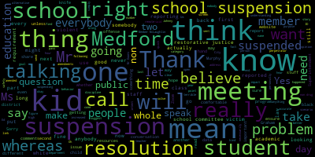
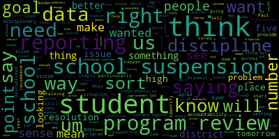

[Ruseau]: is to review the resolution on the disciplinary practices of suspension pursuant to Governor Baker's March 12, 2020, excuse me, order suspending certain provisions of the open meeting law and the Governor's March 15, 2020, order imposing strict limitations on the number of people that may gather in one place. This meeting of the Memphis School Committee will be conducted via remote participation to the greatest extent possible. specific information and the general guidelines from remote participation by members of the public and or parties with a right and or requirement to attend this meeting can be found on the City of Medford website. For this meeting members of the public who wish to listen or watch the meeting may do so by accessing the meeting link and contained herein. No in-person attendance of members of the public will be permitted, but every effort will be made to ensure that the public can adequately access the proceedings in real time via technological means. In the event that we are unable to do so, despite our best efforts, we will post on the city of Medford or Medford Community Media website an audio or video recording transcript or other comprehensive record of proceedings as soon as possible after the meeting. The meeting can be viewed through Medford Community Media on Comcast Channel 22 and Verizon Channel 43 from 6 to 7 PM. Since the meeting will be held remotely, participants can log on. or call in by using the following link or call in number. This is an awfully long introduction. And I will read just one of the Zoom. There's two different Zoom links to get here. HTTPS colon backslash backslash tinyurl.com slash YXZ64CY7. The meeting ID is 970-8865-8077. The passcode is 579751. And to find one of the phone numbers, you only need one, is 1312-626-6799. and then you would enter the meeting ID after that. The meeting ID again is 970-886-58077. Additionally, questions or comments can be submitted during the meeting by emailing My email address PRUSEAU at medford.k12.ma.us. Those submitting questions must include the following information, your first and last name, your Medford Street address, and your question or comment. The agenda for tonight is the purpose. There's only one thing on the agenda. The purpose of the Rules, Policy, and Equity Subcommittee is to review the resolution on the disciplinary practice of suspension. I will read the resolution, which is going to be the shortest thing I've read so far. The resolution was sent to the subcommittee by the full committee. last Thursday, I believe, or I don't remember when our meeting was. Resolution on the Disciplinary Practice of Suspension, whereas Mayor Lungo Kern and the Medford City Council have declared racism a public health emergency, whereas Black, Latinx, and disabled students are disproportionately suspended, whereas suspensions harm students that are not suspended. Whereas dropout rates are higher among students that are suspended, whereas out-of-school suspensions increase the likelihood of juvenile arrest, whereas suspended students are more likely to repeat a grade level, whereas students that are suspended are not being educated, whereas school attendance is a critical requirement to receive an education, whereas receiving an education is a requirement of academic achievement, And whereas student achievement is the highest goal of all school committees. Now, therefore be it resolved that the Medford Public Schools, one, ends the use of out-of-school suspensions effective the first day of the school year 2021, two, provides for the continuation of a learning environment for every in-school suspension, ensures that two, three, ensures that in-school suspensions will not occur in isolation without instruction or rehabilitative counseling, Four, select alternative tools for use in disciplines such as restorative justice. And five, incorporates any funding requirements to ensure the implementation of the selected alternatives with fidelity in the next budget cycle. At this time, I will open the floor to anybody who has questions. Any members want to speak?
[McLaughlin]: I'll have a question, but I'm going to wait until the dialogue starts a little bit. But I do have some questions, but I'd like to just let things roll, if you don't mind, first, before I start. That's fine.
[Ruseau]: If you all could raise your hands, just so I can figure out who to call on.
[McLaughlin]: You mean raise hands through the participants, Paul, or through physically?
[Ruseau]: Either one is fine because there's not 450 people in this meeting. Mr. DeLava.
[D'Alleva]: So good evening, everyone. And thank you for attending. I think I stated it at the last meeting. And again, this is open to discussion. And thank you for holding this committee of the whole because I think having this kind of dialogue back and forth gets us to kind of understand where people are at or where their mindsets are and kind of where things are going. I did state last time that reading the resolution, I was concerned regarding laws, and I know that it was mentioned that we would still follow the law. I did bring up Chapter 222, which has sort of changed our way, and this was in 2012. It was implemented in 2014. of how we would go about suspensions because, you know, there was data concerning about students losing education due to suspensions and they wanted to make sure that we weren't losing that focus. So with that law in place, you know, the only concern I run into is there's some cases where we feel that suspensions need to be implemented. Violence is definitely one of them in the wheelhouse that I kind of think of, you know, two students get into a fight as an example. you know, it's sort of something that we've done so that we can separate but also bring back in and regroup and reintegrate so that they're within the community and things don't escalate to a point where things are, you know, getting out of hand. That being said, I also agree that you know, we shouldn't be issuing suspensions willy-nilly. You know, the last time I heard someone say that they got suspended for chewing gum, I will honestly say in my years of being a principal here in the district, I've never suspended anyone for chewing gum. So I think it's more of how we utilize those suspensions and how we are enforcing those, that's something that I'd like to focus on, but again, this is a subcommittee, so everyone's entitled to speak their opinion, but I wanted to make sure that, you know, I reiterated what I said at the school committee meeting to this group as well. Thank you.
[Ruseau]: Thank you. Anybody else? Somebody else must want to speak. They all came. Ms. McLaughlin? Member McLaughlin?
[McLaughlin]: You say yes to me, Paul?
[Ruseau]: Yes, I'm sorry. I guess it's fine.
[McLaughlin]: Yeah. So yeah, to Mr. DeLava's point, I guess that raises a good question. What if you have two students, for example, that do get in a fight, and we did do indoor suspension, or there was an indoor suspension? How would that address, I guess, or we would need to address those students I would imagine not being together in an indoor, you know, I don't even know if you're going to call it suspension, but, um, or maybe they would be in a restorative justice circle or, I don't know, I guess I'm just curious, how would you respond, um, to that as an example?
[Downs]: Just kind of point of order for you, Member McLaughlin, that in-school suspensions count the same as out-of-school suspensions. No matter, the minute you remove a student from their regular academic classes for a period of time, it is considered a suspension. So just so you're, that's part of Chapter 222 that Paul had cited earlier, part of the Reform Act of the Education Discipline Act. All right.
[McLaughlin]: Okay. So then I guess, thank you, Mr. Downs. Um, and I didn't know who was speaking. So also it might be helpful. I was looking for you on my screen. I'm sorry. I just, I'm double screening cause I'm taking my apologies. No, that's okay. So maybe we can just ask folks to, um, you know, before they speak, just maybe say their name and what their role is would be helpful. Um, and I'm going to try to do my best with taking these minutes to Paul. So, so maybe some elaboration on if it's not a suspension, we're not doing, you know, if we're considering not having suspension for obvious reasons with disproportionality, what might consequences, if that's the right word, logical consequences or otherwise look like instead?
[D'Alleva]: So I will say that when I was at the Andrews, and I think I stated this as well at school committee, we did have in the high school here especially we did have the opportunity for change program which i thought was a was a great program um where we had sort of a counselor overseeing the student for the day they were still doing their academic work but the council was also working with them to try to um you know work on like okay let's talk about you know how you got here and let's talk about the things you would do so you won't you know be part of this again and what kind of like more of the restorative part the again the hard part then ran in is due to budget that that program got cut like again prior to the school committee so you know that program got cut and so we had to go back to following the law you know we we try a lot of alternative things we we've even implemented here at the high school a friday detention in a sense to kind of We've never had detention on a Friday. We've had our Saturday program, too. But, you know, those are the alternative things that I'd like to, you know, also, you know, keep in mind as we're doing it. The Saturday program's been here at the high school since I was a teacher here, and we're talking 21 years now, which was an alternative for suspension, and students were working on their academic work while the assistant principals were overseeing them. And I think even when I went to the Andrews, I even changed it and implemented it more as like an academic sort of catch up day as well. So students weren't just going in there for behavior, they were going in there to utilize the time to catch up on their schoolwork as well. But a lot of, like when funding gets cut, we have to find the alternatives. to kind of keep, you know, the areas safe. And again, I'm not saying that, you know, suspensions are something that we have to implement, but I think it's how we utilize them is the main question. So for example, you know, if someone's vaping, just as an example, let's say we find someone vaping in the bathroom. Does it make sense for us to suspend that student so that they can go vape at home? No. Or do we try to find the alternative parts of the way that we do things where we put them into our programs, we now have the MGH study, and we try to do all these other things. So I guess like the suspensions are part of things, but it's not the only thing that we utilize. So again, I don't want to be the only one. I feel like I'm the only one talking. So please, anybody else, please jump in if they can. But Ms. McLaughlin.
[McLaughlin]: Thank you, Mr. Russo. Can you do me a favor and actually share, or I think it would be helpful to maybe read the resolution one more time. I wish I had it. I was trying to, when you were talking, I was typing. I'm not going to do that again. But maybe the last part of the resolution so I can, it would just help me as we're talking, just if you wouldn't mind, just one more time, just the last part. I had all the whereas, whereas, whereas, but the summary of the, or the outcome that you're looking for, please.
[Ruseau]: Apparently, okay, can I share just one thing? I have a lot of things open on my screen, one second. There it is, I think. Yes, share. All right. Everybody see that okay? So one of the questions I had after listening to Mr. DeLeva was, actually, it might have been Mr. Downs that mentioned that suspensions are, you know, in-school suspensions are treated the same because there's not an education being provided. I think the state is still definitely reporting them separately as distinct things, Mr. Downs.
[Downs]: Any time you remove a student from the academic setting, whether you are emergency removing them for, let's say, the rest of the day, you put them in school suspension or you suspend them, it is part of the suspension under Chapter 37 and 3 quarters. And again, the just one act that was enacted a few years ago. in-school suspensions and out-of-school suspensions count as the same. They're both considered suspensions. Additionally, anytime you remove a student, again, from the academic setting, whatever you want to call it, again, you're removing them from the academic setting. And if you go by the letter of the law, removing a student from the academic setting for discipline purposes, and that's what it would be, no matter what we call it, is considered the emergency removal or suspension. So thank you for your time. Thank you.
[Ruseau]: So are you saying nobody is tracking the difference between taking them out of the classroom and sending them to guidance and sending them home for a week? Paul, Mr. Delato.
[McLaughlin]: Excuse me one second. Point of information, Paul. Can you stop sharing the screen now? Because I can't take notes when you do. Thank you.
[Ruseau]: Sorry. Zoom. One second. Stop. Share. There we go. Good. Thank you. I mean, my understanding is they're really, I mean, I understand that the law might say that they're the same thing, but unless somebody is telling me we never send a kid home and that they're always still on the premises, then there is a difference regardless of what the law says.
[D'Alleva]: Paul? Yeah, I would agree with you, Paul. The thing is, is that we really don't have an in-school suspension program. I mean, we're not coding kids on in-school suspension. If you go to the DESE profile and you look at Days Missed, for example, they actually list it as in-school suspension and out-of-school suspension. But as Michael's saying, he's right. you know, a suspension is considered a suspension whether or not it's looked at as the removal of academic work, right? That's the main goal that, not goal, but that's the main identifier that DESE has sort of put out there when we've come up with 37H and a quarter and, you know, whatever the federal laws come. Really and truly, if you looked at the DESI data right now, I can almost guarantee you everything is 0, 0, 0, 0, 0 for in-school suspension, because the way everything that we have coded really goes for out-of-school suspension. And that's just, again, we really don't have an in-school suspension program, because that needs oversight.
[Ruseau]: I'm happy to share their screen. I have it right here in front of me. It is definitely not zeros across the board. For in-school? They have student discipline days missed reported. So there's no, I can't know whether or not discipline days missed means, if you're saying we don't have an in-school suspension program, then these are all days that kids were not in the building. And then we're not reported at all when we take them out of class for two periods. Because that's not accurate.
[D'Alleva]: If you click student discipline, the one above it, discipline a day's missed, percent in-school suspension is zero across the board for the year 18-19. No, it's not.
[Ruseau]: I'm looking at Medford.
[D'Alleva]: I'm looking at Medford High School. I'm sorry. So you're looking at the district, and I'm looking at the high school. That's the problem. So if I was to share my screen right now, for Bedford High School, in-school suspension is zero across the board.
[Graham]: So are you saying that that's because there's a data reporting issue, or are you saying that's because we just suspend everyone out of school? I'm not clear what your conclusion is.
[D'Alleva]: No, there's other things we do. This is just what's reported to DESE regarding suspensions here at the high school. There is no in-school suspension program that we have. Therefore, if we are doing a suspension, it's reported out of school. If we are, that's not our only wheelhouse of what we do.
[Graham]: So are you saying, I'm looking at, I think I'm looking at what you're referring to, Paul, and I'm looking at a grid that starts with all students and then it breaks down into subgroups. All students, 1,400 students for the 18-19 school year, 112 students disciplined, 0% in school suspension, 8% out of school suspension, 0% expulsion, 0% alternate setting, 0% emergency removal, 0% students with school-based arrest. So are you saying that that 8% should be distributed across all of those columns and that we are not accurately like categorizing and classifying what we're doing? Or are you saying we simply don't do those other things?
[D'Alleva]: I'm saying that I can tell you since my tenure here, there's been nobody that's been excluded. No one that's been sent to an alternative setting. No one that's needed an emergency removal, and that's usually two days under that. So, I mean, I can't tell you regarding everything, but, you know, our assistant principals log in, you know, when we're doing suspensions, and they are being reported to DESE.
[Graham]: Okay. So, the data, it's not a data issue then, right? So, what you're saying is there aren't expulsions, so 0% makes sense. Um, there aren't alternate settings. So 0% makes sense. So, so this date, what this data says is that 8% of students receive out of 1400, 8% or 112 received an out of school suspension in the 2018, 2019 school year. Yes. Okay. And this resolution is saying, we want that number to be zero. in favor of pick a different category. Is that?
[Ruseau]: In favor of in-school suspension or better yet, getting to the root of the cause because, my apologies. Correct.
[McLaughlin]: Point of information, would you guys mind sharing that screen for one second?
[Graham]: I can try. I don't know if I can do that. Let me try.
[D'Alleva]: I can do the high school one if you want me to.
[Graham]: I think I have it right here. Let me.
[Ruseau]: Do you know where my phone is?
[Graham]: Can you see something?
[Ruseau]: Yes.
[Graham]: OK. Can you see a chart that says 2018-2019 student discipline data report? OK. I've got two screens, and I don't even know what I'm sharing at this point. So tell me if it's something. Not that. So Melanie, I was reading across this top line, this all students line. And so what we're saying is the goal is to take this 8% to zero and to either move the punishment, I guess I'll call it, right? to a setting where we can be focused on some of the things that Paul was saying we used to do and we don't do anymore, focusing on the rehabilitative aspects of what we're doing. I think that's what we're trying to accomplish with this policy.
[McLaughlin]: I think I saw Mr. Blough, yeah, I think I saw Mr. Blough cut his hand. So I don't know, Paul, if you wanna. calling him, but I also have another follow-up to this. Jenny, thank you for sharing the screen. Don't take it away yet, please, because I want to comment on something there. Do you want to go first, Mr. Blauck, or do you want me to go?
[Blauch]: Member Russo, it's your call. If you'd like me to go, I can wait a minute.
[Ruseau]: Yeah, go ahead. That's fine.
[Blauch]: OK, so I'm Dave Blauck. I'm one of the assistant principals at the high school. I'm starting my 10th year as an administrator. And I have suspended many kids, probably just about or more than anyone on this call. I just want to say, you know, for the record, suspension out of school is a big deal. It's something that, you know, I think what we've learned through Chapter 222 and, you know, just trends that we need to respond to, you know, as the years pass, that we really shouldn't be doing it unless there's truly no other option. You know, that said, going down to an absolute zero for suspension, I think it's extremely difficult, you know, if not impossible. I mean, I think we're all making an effort district-wide to minimize suspension as much as we can. But then again, every, if I find a kid with a knife, I mean, that child, from my viewpoint, needs to be on an emergency removal, you know, which is a suspension where the child can't appeal based on circumstances. But, you know, there's some situations where we say, you know, we look around like the possibility of violence, an issue of sexual violence, you know, some things where we just say to ourselves, you know, this child does need to be off the premises. Now, I think that the types of suspensions that might have been acceptable, let's say 10, 15, 20 years ago, where let's say a situation of disrespect or someone has, I don't know, somebody has a vaping item or cigarettes or alcohol, you know, like we may say to ourselves, okay, that's not a violent situation. That's not a, that's not posing a, a substantial threat or a danger to the school or school population, you know, whereas there's some others I think we run into everyone, you know, who's been in these roles runs into at some point, we say to ourselves, you know, like this child truly does need to be off the premises. So I think that's something that's important to just have as an option. But after you have tried every single other thing, because as I said a moment ago, it's a very big deal to say that this child is not going to be permitted to attend school and access curriculum. So I would say something to look into would be, you know, how do we continue to support the efforts to re-engage children and to find additional tools in the toolbox to keep them in the building, accessing support, working on ways to work through problems that might be disrupting and disturbing them in that time. But then again, I look at, like I said, you find a child with a knife, it just isn't prudent to have that child remain in the building when you don't know what's going to happen there. Thanks for the opportunity to speak.
[Ruseau]: Thank you. I would, if I may, if we were equitably providing suspensions, I would be more than willing to have a conversation around how we can solve the problems that cause suspensions, but we are not. 62% of suspensions adjusted for race were not white people, and 38% were white people, white students. So that tells me, unless we are comfortable having a conversation around the suggestion that the black kids are worse than the white kids, which I am not comfortable with, and I don't think there's any evidence to suggest that's an accurate view, that we have two problems. We have the problem of how do we address kids that might actually need a suspension? which is what I hear you talking about. But I don't hear you talking about the fact that the primarily white staff notices the black kids doing the same things the white kids are doing, and they're the ones that get suspended. I mean, it's like, it's almost tiring that that needs to be repeated. And I hope that nobody's offended. And I also hope that if you are offended, you understand that you are not understanding the problem. But, You know, this, this problem is not the issue. First of all, your example of a knife. I mean, you know, I grew up in rural New Hampshire and I would have been shocked if any of the kids didn't in high school didn't have a knife in their pocket. That would be weird. And there wasn't a time, you know, long ago, perhaps even in my lifetime, when in some parts of this country, people brought guns to school and that wasn't actually call the police scenario. So, you know, what I think of as like suspendable behavior and what you think of and what everybody thinks of isn't the same. And it isn't the same for every child either. Which child is considered performing a suspendable behavior isn't the same child to child. So, I mean, My biggest concern right now is not whether or not a kid comes to school with a pocket knife. I mean, I'm not talking about a big Bowie knife that is intended to behead a deer. I'm talking about a pocket knife. If that kid's getting suspended, I would say that's already a problem. And I mean, I think if there's intent or any reason to believe that that knife is there for a violent purpose, That's a different conversation. But just the presence of a pocket knife, I mean, I think would be a pretty shocking reason to suspend, in my opinion. And again, everybody has an opinion, and everybody's opinion is different. That's another problem. So I mean, this resolution was intended to solve the problem that has not been solved with all of the good work of all of the good people in the school. And I do believe it's good work. This is not an attack on anybody, but it is still not getting better. And so I think that a new, looking at this in a different light of, okay, we aren't gonna solve the racial disparities in how kids are seen. simply by wishing it away. And, you know, we can all take anti-bias training till we're blue in the face, but unless you grew up under a rock, you're still going to see the black kids as the kids that are threatening. And so it's, I feel like it's my job on the school committee to figure out how to make sure that they're not getting suspended because these out of school suspensions are not just times where they're missing their education. I mean, they're dramatically increased rates of dropping out, which we need to rephrase that all together, but also the opportunities to be involved with the police are dramatically increased when kids are not in school. So I'll let other people talk. Sorry, Ms. McLaughlin.
[McLaughlin]: Thank you. And to that end, to Paul's point, I also want to point out the data here. that 84% of 112, so about 80% of these discipline suspensions are students, high-need students. So students with disabilities, economically disadvantaged English learners. And that is, again, another data point that's really important to look at. So looking at the 62% persons of color and more than 80% or 80% high needs. And so what is the intersectionality around addressing the social emotional component of this? And I know that Stacey Shulman has her hand raised. So I'll be curious to hear that. But as we're addressing trauma, as we're addressing social emotional needs of children, and again, getting back to some of that implicit bias around that, what that looks like. And, you know, a student who is experiencing a lot of aggression at home and then comes into school and you know, maybe has a teacher or someone that is, seems threatening or aggressive to them and they explode, you know, we understand that that can be a root cause of trauma. So, but the data does speak volumes in that 80% of our students that are getting disciplined are high needs. And so I would love for folks to talk about that as well.
[D'Alleva]: And then I- Point of information, Ms. McLaughlin. 84 is the number of students. 11.5 is the percentage.
[McLaughlin]: 84 out of 112?
[D'Alleva]: No, 84 out of, if you look at the chart, there's 729 students that are recognized. 84 of them are students. Right. It comes out to 11.5 percent.
[McLaughlin]: Except it's not because it's 11.5 plus 15 plus 11.5 for the high need, well it depends on the students with disabilities and the economically disadvantaged are also in the high needs 11.5.
[D'Alleva]: Right, which is, but DESE, so DESE identifies the high needs of those three categories. So they're taking all those students into account.
[McLaughlin]: So the 15.8 and the 12.3 are the equivalent of the 11.5. That's the way I'm looking at it right now. Well, then how can it, if it's students disciplined and 84 of them are high needs and the total students disciplined are 112, that's not 11%.
[D'Alleva]: But that's out of all, that's, that's out of, that's a hundred. No, I see what you're saying, but the percentage doesn't come out correct because you were, you were saying 84%.
[Graham]: 75% of students are high needs students who are disciplined. So of 112, 84 is 75%. So, 75% of students who are disciplined are high needs.
[McLaughlin]: Thank you, Jenny. So I was saying approximately 80, looking at 84 to the 112. Right. But it's actually 75% because Jenny, you know, used her calculator or her brain and did the math. Thank you. Calculator. I was like, I assume calculator, but I didn't want to. So thank you. So that's a really, that's an important point. 75% of them are high needs of the students who are being disciplined. And again, it goes to the same point that member Rousseau is saying, you know, are we saying that students who have high needs are, you know, require discipline more than students who don't? Maybe, and maybe again, you know, Stacey Shulman can speak to that, but maybe suspension isn't the way to address that. So I'm done now, but I wanted to just point out that data. And then I am going to ask if everyone's okay, Paul, that you stop sharing the screen just so I can go back to my Word document to take notes. Thank you.
[Ruseau]: Oh, do I have to unmute you, Stacey?
[Schulman]: Oh, no, I can do it. Hi, I'm sorry. I didn't hear you calling me. Good evening. I just wanted to implore the committee to go back and re-review the data in a program evaluation method. While I think it's helpful to look at the numbers here on the screen, there is a significant amount of data that's missing. including the referrals on why these students were being referred to administrators for discipline and any other circumstances that we can find out. While I think that it's definitely a great topic to be looking at at this time in terms of why are students being suspended and certainly why are students who are of color being suspended at a higher level, which has been shown here in our district. But it feels to me like there's some information missing. And we've spoken today about how staff have engaged in implicit bias training and trauma training. But really, I feel like we've scratched the surface on those levels and we need to go a little bit deeper. So I would like to implore you all to take a step back and do more of a comprehensive program evaluation. While we don't have 100% capacity of students in the building or any at all right now, we have the ability to take this time to really have an in-depth data review of what suspensions look like. And what we need to do in order to train staff, and perhaps there is an additional cost to keeping staff in the building. Mr. DeLava spoke earlier about the opportunity for change program. While that was eliminated due to budget cuts, it also was an underperforming program. It was not utilized well. We performed an extensive program evaluation of that in 2017, but what it came down to was that it wasn't running as effectively or efficiently as it could have because we actually needed more staff to make that happen. As the Director of School Counseling, I have seen and participated in students either while they're, you know, having challenges in the building and may need to head home for the day and also upon their return. I think one of the things that Medford does well is we have a really nice re-entry program. Oftentimes, counselors are involved However, engaging in counseling is not something we can mandate to students. So that's on an elective basis as well. But I really think that I would love to go back and I'm certainly happy to help with this effort and do a really deep dive on what this data is showing for us to make decisions going forward.
[Graham]: Stacey, I actually think that that is the right way to go about getting at number five on the list. So I still don't think that ending out of school suspensions is a bad sort of number one place to start. But in terms of being able to accurately identify number five, an in-depth program review, so would allow us to look at the data, as you said, like I agree, I think there's lots of data missing here. Like I would like to see lots more data than is here. So what I would suggest member Russo is that between four and five, we add something that says the administration will complete a comprehensive program review to identify the causes of suspension, as well as recommend mitigation efforts so that number five can actually happen, right? Because otherwise, we're just throwing a number at the wall. And we don't know if it's enough or if it's not enough. But if we say, here's our problem. Here's what it's going to take to address our problem. And here's the money that we need to do that. Now we have an actual path forward that is actionable. So that would be my suggestion is that we add that as another bullet in terms of what will happen to get us to this place next fall, where we do not want to be issuing out of school suspensions.
[Schulman]: Thank you, Miss Graham. I think my worry here is that the suspension is the end result. There has been some sort of behavior or incident that's happened there has been this suspension is the end result. My worry is if we remove the action of suspension at this time without understanding and having the resources to mitigate students challenging behavior. we will be adding more challenges to the system and potentially increasing student frustration across the board. Students are suspended under, as Mr. Blauck and Mr. DeLeva have said, under extreme circumstances where they or others are in jeopardy of safety. I know there was another incident referenced earlier, potentially of a student bringing a knife to school. Administrators are very well trained and have been. on threat assessments over the past few years, and particularly by Dr. Nancy Rappaport out of Cambridge, who is the leading expert on school threat assessments. We're lucky to have her in the area, and she's assisted us with that. So it's not taken lightly, but we often have situations where students are incredibly dysregulated, unable to regulate themselves, and it could lead to potentially more dangerous situations if we are unable to say at this moment in time, You know, we need you to take a step back and come in the next day and we're happy to work on this situation. But we try, try, try again, especially at the elementary level to keep those kids in the building. We know how important it is. But without the inability to have to have to take a step back because we don't have additional staff. We don't have the resource room to, you know, potentially work with these students in the moment. I fear we may be heading into other unsafe situations without knowing those protective strategies ahead of time.
[Graham]: But this resolution stops out-of-school suspensions at the start of next year. So nothing is immediately happening is my read on this. Is that correct, Paul?
[Ruseau]: That's my understanding, my intent.
[Graham]: OK. So I mean, nobody is suggesting that this happened tomorrow.
[Schulman]: I understand. I think that I personally am anxious to see how students are regulating back to an in-school environment and what that looks like and what their needs are. And again, I implore you to do the program evaluation first before taking the action to say we are no longer going to issue out-of-school suspensions.
[Ruseau]: Just a quick point. The Department of Ed data that we reported to them indicated that 81% of our out-of-school suspensions, students disciplined with out-of-school suspensions, 81% of those were non-drug, non-violent, non-criminal related offenses. So I would suggest if the feeling is that there's a threat involved, we need to take a hard look at how we're coding this stuff. because the story I'm hearing is that we're really concerned about the safety. Well, the safety of what? Somebody vandalizes the wall? That doesn't seem like a safety offense to me. So I would just ask that we, you know, as a note, realize we need to be really caring about how we report all of this data, because this is why we're here. If the data reported said that, you know, we were doing all these suspensions because people were trying to kill other kids. I wouldn't we wouldn't have this resolution and we wouldn't be having this meeting. But instead, it says 81 percent of the suspensions at the high school, at least, were for non-drug, non-violent, non-criminal related behaviors. That to me is chewing gum, swearing at a teacher, writing on a wall. I mean, I don't know what other other things fall in that category, but the vast majority are for things that don't sound like what you're all concerned about. And that concerns me. The other one thing I did want to quickly mention, and now I forgot it, but I'll come back to it. But I do want to let Ms. Moretti, who's been waiting a long time with her hand up, I apologize, speak. Can you unmute yourself? Great, thank you.
[Moretti]: Thank you. I know it says Medford. I don't know what happened. Nadine Moretti, I think most people on here might know me already. You know, I've been trying to be very on top of all the school committee meetings over the summer, listening to everything everyone's had to say. Mr. DeLaver and Mr. Bloch, I love everything that they've said, and I just wanna say a couple of things. I must be old school because I still believe in children, people being held accountable for their actions. I know there's so many different facets that we're talking about here. Mr. DeLava did say no one's ever been suspended for chewing gum. I wouldn't think they would be. I'm a little concerned, you know, as a parent listening to this, because for me, if a child was in school with a pocket knife, That's a danger immediately because you can still get hurt. And, you know, it's up to these administrators who we entrust and who do all this, you know, that I trust their decisions and how you guys discipline. I mean, I don't know enough about it, so I'm kind of just speaking maybe even just out of pure emotion right now. I think that this, what I find is this adds a little more problems that I don't even know if this is necessary. I appreciate what you're trying to do, Paul. I really do. But for me, listening to this type of discussion just exacerbates how I feel. I think that know the violent behaviors and it shouldn't be based on color because I think that if you have 20 kids and if 15 came in who were white and had knives or 15 came in people of color had not this really shouldn't matter like that should be a whole separate I don't even know how to even really say what I'm trying to say I It aggravates me that this is so based on color, because if you have these kids coming in with the knives or with this behavior that causes the administrators to have to do what they have to do with suspensions, then that's how it should be. We're not holding people accountable anymore. it's become so aggravating to listen to. So I mean, it just, to me, it would be very nerve wracking to have my children in the school and know that people aren't going to be held accountable for things that, say, the school committee or the subcommittee is going to find unoffensive. Or you're taking away the authority of these other people, or at least trying to. So I don't even know if what I'm saying makes sense to you guys. And I apologize. I've had a very rough year. But I just wanted to, as a parent, just put it out there because it just doesn't make me feel comfortable. If a kid came in with a pocket knife and one of my children got hurt or was in a room where this happened, I would be raising holy hell to Medford Public Schools, the city, and everything. So you gotta think about that stuff. Right now, in-school suspensions won't be happening. Remember, we're not in school. So if this is for next year, let's hope that we're back in school next year. And I think that it's everyone's duty on this, you know, on this committee tonight and everywhere else to keep the kids safe, no matter what, but we still have to hold people accountable. No matter what their color, you know, anything, it's just, you still have to hold people accountable and you shouldn't take that away. So thank you for the time. And I apologize if I'm all over the place.
[Ruseau]: Thanks.
[Moretti]: Thank you.
[McLaughlin]: Thank you. I was listening and I just sort of wanted to ask folks or have folks think about a few things. One is, I don't think that this is suggesting that we're taking away discipline. I think it's suggesting that we're taking a closer look at what the disciplinary measures that have been being used are, how effective they've been, and whether or not color has played or race has played a role. And I think the data shows, I don't think, I know the data shows us that race clearly has played a role. So we were just listening to a student speaking the other day talking about wearing headphones in the hallway at the high school. And she, and this wasn't recent, so I don't want anybody to think that this was them. but she talked about walking in the hallway and she's a black woman student and being yelled at and disciplined for having her headphones on in the hallway as a white student was walking by her doing the exact same thing and did not get yelled at, did not get disciplined. And that is part of the problem. And that is where the implicit bias comes in. I think that people don't realize that we don't realize that we are built with this implicit bias because we are part of a system that we were brought up in and have been part of our entire lives where we see things as threats related to color, unfortunately. And we see them as more threatening when they're related to color. And that's why we see disproportionality and discipline. I mean, disproportionality and discipline is a national issue in the United States. It's not something that's specific to Medford. It's a national issue. People of color are disproportionately disciplined. in our schools and that, I think, is what Member Rousseau is trying to address in this subcommittee and in this resolution. And that's what I would like us to really take a look at. And the discussion that we're not hearing right now, I feel like, is, you know, I appreciated what Stacey Shulman was saying as well about, you know, going back and looking at the events and what sort of triggers the suspension. And I think that's important, too, to look at the backstories and the data and the information. But the fact still remains that we are still disproportionately disciplining students of color and that is regardless of the instances or the you know what happened or whatever that is a direct result of our own bias and you know I can share sort of one of my own stories, you know, as a mother of a white male student who, you know, in high school, I mean, in middle school, certainly was disciplined, but might have got a phone call home first. And again, as the co-chair of the CPAC and someone who's involved in the schools and someone who has maybe some means and has a relationship with the administration and all those other things, got phone calls home Um, from them to address any sort of discipline issues and also, you know, a student on a, on an ed plan. Um, so the disability certainly was a factor in this role, but also in this situation, but also got the benefit of a phone call home. Um, when another parent may not have gotten that, um, maybe because they didn't have a relationship or maybe because they weren't white, or maybe because we don't realize that we do those things. They're not intentional, but they, we do do them. And so we have to pay attention to those. And I think that's really. an important piece, and as much as I wish color wasn't a part of this, it clearly is because the data shows us that. Thank you.
[Ruseau]: Superintendent, you would like to speak, I believe.
[Edouard-Vincent]: Yes, um, and I know there is nays iPhone. I've really been listening to the conversation this evening. I also have a document that I would like to share based on your resolution that was presented last week. with some proposed amendments that we, the administrative team here looked at today and made modifications to the original recommended resolution. And the modifications that were made, we felt were more reflective of what the work could actually look like. So I don't know if you want to take these questions first, and then I share that with just slight modifications. But the essence of what you're trying to say, but at the same time, you know, listening to what Ms. Moretti shared, and she apologized for sharing her thoughts, but I completely understood what you were saying, Ms. Moretti. And again, there are a lot of contexts and situations that do take place on any given day at a school. As we know, no two days are identical. And we know that as a district, there is room for improvement. And I am in agreement again with what Ms. Schulman shared earlier about us doing a comprehensive review and really looking at how discipline is meted out across the district, but at the same time also looking and delving deeper into our own implicit biases that do exist. So we're not denying that. And so after Ms. Ney speaks, I would love to share the screen so the school committee can look at the proposed amendments that the administration was in agreement with making to this resolution. Thank you.
[Ruseau]: Thank you. Um, I'll have, um, may go next then, uh, member Graham. Where did they go? Did she, he or she lower their hand?
[Moretti]: Paul, excuse me. That was me, Nadine. I, I I'm nays iPhone, but yeah, I was having problems on the computer. So thank you. Thanks. Okay.
[Ruseau]: Uh, never Graham.
[Graham]: So I just wanted to, while we were talking, when I think about accountability, I think about our accountability to all students. And I think we certainly have a responsibility to follow the law. And it's my understanding that those violence issues, particularly that Nadine was talking about, would be cared for under the law and would not this would not supersede any requirements that we have under the law. So, so there is that, but I also think accountability means figuring out how to not repeat the same situations that sort of escalate, particularly amongst students of color, but for any student at that, for that matter. And to make sure that we are doing the things that, that we need to do as a district, to deescalate those issues and to help those students sort of assess why their behavior is sort of leading to this place and get them on a better path. But while we were talking, I looked at some other districts and I just wanted to note that Arlington High's out of school suspension rate is 2.1% to our eight I'm looking at Malden right now. Malden's out of school suspension rate is 7.9% at Malden High to our 8 point something percent. And, you know, I just think we have an obligation to try to do better than we're doing. I think we all agree on that. And I don't know why there's so much resistance to saying we're gonna make a goal and move towards that goal in a meaningful way. And frankly, to put the school committee on the hook for the resources and the prioritization of these goals, which is our job. So it is our job to decide what those priorities are. Obviously with a lot of input and direction from all of the administrators on the phone, which is frankly shocking given that school goes back tomorrow, that you all are here. And I wanna point out that it feels like you're all here because you're here to tell us that we're wrong and that out of school suspensions are not a problem. And maybe that's not exactly why you're all here, but I would like to see us all get to a place where we can agree that goals are okay to have, And that in terms of working to achieve a goal, accountability is critically important. And that is on both the student and on incumbent on us to set those priorities and to do what we can to mitigate out of school suspensions in total, but also specifically for students who are disproportionately being suspended out of school. I'll stop there, but I just wanted to point out that it feels like you're all very against this, and I really haven't heard anybody say why.
[Ruseau]: I just want to say one quick thing. When I was writing the resolution, I didn't just sit down and pop it out in a half an hour and call it a day. I mean, I did, I would say, many hours of research and read plenty of articles about how just banning it and calling it a day creates full-blown chaos and it's a nightmare for districts. And there are plenty of districts that have done that in California, for instance, where no resources and no planning and no alternatives were even considered. It was just the school boards over there, just like it might've been in the legislature, just said no out-of-school suspensions and chaos ensued. And often that stuff was even reversed so bad. want to be clear that this resolution was not an attempt to just, you know, stick it to you all. That wasn't the goal. The goal was to, as Member Graham pointed out, you know, if we pass this, it is inclusive of the requirement that we provide the resources, which I heard earlier from Mr. Peleba and Ms. Schulman that, you know, there was a program, it wasn't necessarily the best one, but then the resources just went away. So, you know, The committee has to be as committed to making this happen long after, if we pass this, long after this passes. Because we can't just forget at budget time that the restorative justice or whatever other program, that it's not free. Aside from the staff, literally there's a lot of costs. And I went to every single session on restorative justice at school committee conferences, on how to do it right. And most importantly, I was looking at what not to do, because every district seemed to have a story about how they screwed that up. And the theme among all of those districts that the biggest takeaways for how to not do it right was to not put any resources into it, to just think your staff is going to wake up in the morning and know what restorative justice is, or do it in one grade level and just hope it kind of just flows up. So this is not an attempt to just flip a switch, call it a day, and put a check mark next to our names that we cared. So I think Mr. Assistant Superintendent Murphy would like to speak.
[Edouard-Vincent]: Yes.
[Murphy]: Thank you, Mr. So I just would like to briefly respond to Ms. Graham's comments. But I think I can fully understand how it could feel as though there's some level of resistance. I don't think it's the, and the superintendent can obviously speak to this, but I don't think it's the superintendent's or excuse me, the administration's position that there is not a need to look very closely at these issues. Because I think some of the statistics that you've read, and frankly, the experiences that districts across the state and the country are having, indicates that we have to look at proportionality. And when we see evidence of disproportionality, the only way to combat that is to hold ourselves accountable and put some of the measures in place and set some of the expectations from the school committee And I think, so I think it's an appropriate topic. And I think it's, I think that the motion as it was introduced at the last school committee meeting establishes the contours in which we as a district can try to get to a place where you don't have what appears at first glance to be relatively glaring evidence of disproportionality. So I think our view as a team is that this is a really important issue that warrants the committee's attention and requires action on the part of the administration. That being said, I think there's two pieces that folks as the practitioners have reservations about. And the first is to Ms. Schulman's point that there's a need to establish more comprehensive data if we are going to get to a place where we really understand what the causes are. I think that's one piece. I don't think anything in the motion as written, frankly, prevents us from doing that. But I think Ms. Graham's point about potentially having an additional provision that sets a timeline by which the administration can investigate the issues and report back as to what we're finding. I think that's critical. The second piece, and again, the people that are on the ground serving as assistant principals and principals can speak to this better, but I think what's important to remember is that while there is no law that would always, that would require on a per se basis, a student be excluded from school, the laws and the processes that are contemplated by those laws are meant to create a situation in which the exclusions are very rare. And the challenge is, if a district via a school committee policy were to prohibit out of to prohibit exclusions of any kind this, I see, is obviously designed for out of school, but people have already spoken to that distinction or lack thereof. That if we were to prohibit it at the district level, you would have administrators who would find themselves in situations in which they have a statutory authority and therefore implicit responsibility to respond to a situation in which there are concerns about safety and the only way to do that. to exercise their statutory authority would be to act in a way that is inconsistent with school committee policy. And that I think sets up an inevitable conflict and where you have administrators who feel they have an obligation to exercise the statutory power that they have been given by the legislature, but also a responsibility to adhere to the policies of the school committee. And so what we've tried to do with the proposed amendments is to qualify it. That makes it very clear that the Medford Public Schools, through the governing body of the Medford Public Schools, has attempted to make very clear that from our organizing principle is we do not want students excluded from school. but that in those rare instances that are contemplated by the statute, the administration would still have the right to exercise its authority to exclude under those very narrow and very few circumstances. And I think what's not in the amendments that we've provided, but what I think would be a strong addition would be the reporting piece that we've talked about. So that way, when this policy gets into effect, both before and I would argue after, we can look to see if this is advancing the objective that the committee has articulated, which is to essentially narrow the lane by which students are excluded. And I think that would be important. But I think the concern is, I do not think that the administration's comments in any way represent an aversion to the public policy goal that's inherent in the proposed policy. But I do think there is concern, Esther, from an implementation perspective, there will be instances They should be rare, where due to safety concerns, the administration has to exclude a student from school. And when we do that, we don't want to be doing so in violation of a school committee policy.
[Ruseau]: Thank you, Dave, Mr. Barker. I just would use the words implied disproportionality, I believe you said. Let's be crystal clear. There is no implication here. It is absolutely no question that it is disproportionate. And any argument against that, I would just love to hear.
[Murphy]: I certainly don't have one. And I'm seeing the data that you are. And I think that's why this is a conversation that we have to have. And it's an issue that has to be addressed. I don't think there's any question about that. It's just a question of how we address it so as to not create additional problems in the future.
[Ruseau]: Sure. Thank you. Looking at the amendments on the screen, and then I will call on Ms. Rodriguez. You know, across the nation, I don't really mind that part. It does sound a bit defensive. It's like, let's be clear, it's not just a Medford problem, but I think what just happened to me. I lost that.
[Murphy]: It's a tough time for it to cut out.
[Ruseau]: Yeah. Maryse, was that yours?
[Edouard-Vincent]: I stopped the share.
[Ruseau]: Oh, OK. Why don't we let Ms. Rodriguez speak now, since she
[Rodriguez]: Hi, I think I have two points. And that is that all three that whatever is done for an evaluation has to go down below the high school level. I see these issues at the middle school all the time. And by the time the kids get to high school, they're already kind of tagged as problems when really that's I don't think the case for some of them. So it has to go down and not just be about suspensions, but about dress code violations and in trouble in the hall and everything else. It can't just be the kids who get all the way to the end because the problem starts in the beginning when kids are called out for certain things all the time. And I think that's where you're gonna also find a lot more of the implicit bias. I am very worried about there being no accountability for this. It's great to enact a rule or whatever, but if somebody is not looking at these statistics on a regular basis and knowing who is the person who is handing out this discipline, not just the person who ultimately makes the decision, but the person who calls the students out. That's how you get back to the person and have an honest conversation about why did you call this person out as opposed to, you know, this other person. Because I think that until you're confronted with your biases, you can't really overcome them and be a better person in this situation. And I will also say that I thought that the comment about the perceived bias in the data, I would say I didn't like that comment either. I don't think that there's any, the data is completely clear that two thirds or more of the kids are low income, all these minority are all these things. And I think that it's a problem that it hasn't been discovered by the school, the city itself, as opposed to the city, the school itself, as opposed to the city council having to bring it up. That's it.
[Ruseau]: Thank you. Is there another, Mr. Downs?
[Downs]: Thank you, member Russo. Again, I'm similar to Mr. Murphy here. I'm not, we're not here to, you know, argue with you or anything like that. I hope you understand that. This is, you know, I've been doing this for 21 years and there have been many students who have come across my desk who've done things that are very, very bad that I won't even give you those examples. And that's one of those times where, you know, suspensions or the exclusions do come into play. And for an example, we're all here because we don't want students to be targeted or anything like that. But in the instances where students are targeted, and students' civil rights are violated, and they are feeling threatened at school, to say that we can't remove a student who is targeting students, and therefore that victim has to watch and look at that student perhaps in the very next day, that's just another example. isn't always crystal clear and we're here to work together. But those are examples where sometimes we have to protect the victims that have things happen to them in school or out of school that does affect them in school. And so we don't want to have always, we don't want that ability to protect those victims necessarily removed from us either. So thank you for your time, Mr. Russo.
[Ruseau]: Thank you. I think this is a really, really important point that Mr. Downs just brought up. You know, and I could never for a second defend, you know, suggest that we not defend victims. But I also want to remind everybody that I don't believe there's any spot in the law that says we can just permanently take a student and never educate them because they have become a perpetrator against the victim. They still have to get an education too. We're not talking about adults who can be just sent off to the prison and never seen again. We're talking about a kid who did something wrong to another kid. And looking at the data, there's been no sexual assaults reported. I find that hard to imagine. I'm guessing it's, again, more of we're not reporting it the way it really happens. And I find that really problematic. But when a kid does something to another kid, no matter how egregious, that other kid is coming back to school, whether it's tomorrow, a week from now, the victim doesn't suddenly become whole and happy and like it never happened. So if the approach is to use punitive measures against the perpetrator, and that's the end of the story, we're not helping the victims at all. Because first of all, the perpetrators are likely to be doing it again. So I mean, the short term problem of dealing with an incident can't be the whole plan. How do we make it so that these two kids who are in the same AP bio class are going to be able to be in the same AP bio class for the rest of the semester? Suspending one of them isn't going to make it easy on the other person, the other student, at all. I mean, they might feel better for a minute, like, yay, Johnny got suspended for doing what he did to me. that doesn't make it any more comfortable for the victims. And so I just think that focusing on, and that's the whole point of restorative justice. And that is just in the resolution, it is such as restorative justice. This is not prescriptive as to what the school system will do. I would leave it to the professionals to figure out what the right choice is. Restorative justice is one of several programs that are available and I have not evaluated them. And that's why it's not prescriptive as to what one gets to use. It's just the only, it's the one I've heard of the most. So, but, you know, the whole scenario that we have to be able to take the kid out that did something terrible, we're not talking about murder here. Like, and we're not, according to the statistics that we keep reporting, we're not talking about sexual assaults and rapes. We're talking about, according to this, the vast majority of these are non-violent, non-drug, criminal offenses. So that's not Johnny punched somebody in the face. That's not a rape. The vast majority of these kids who are losing their education and are having increased probability of ending up in prison are kids that are doing things that I'm betting everybody on this call has done all of those things, many of those things. So I just think We need to be careful with false equivalencies and drawing generalities. And I also think that even for those severe things, unless there's some kind of loophole I know of where we can just say, Johnny, you don't ever come back to Medford Public Schools. Good luck. That kid's coming back. And that kid's going to make the victim uncomfortable. So let's worry about that. I'm worried about that. My son's a ninth grader. Is he going to do anything wrong in his whole four years in high school? I'm sure. And I hope that we have a plan more than just punishing him. What about the person that got hurt? So who else wants to talk? Ms.
[Graham]: Graham? I think that the edits that the superintendent shared, I'm generally fine with. I would. still ask that a program review be formally added to this resolution. And I would like to see the program review be about discipline in a broader sense than simply out of school suspension, because I think Maria is right that it's, we can't just feel good about solving like this tiny piece of the problem so that our metrics look good. Like I want us to be endeavoring to do better sort of overall. So I think that that program review has to be a little bit more, um, sort of broad in its, um, in its review of discipline. Um, and I mean, that could include everything like up to and including taking recess away. And we have, uh, we have a resolution that is tabled about recess. Um, it continues to be a point of pain at the elementary schools, and maybe it's not like the most immediate thing because we're not going back into a school building tomorrow. but it's a form of discipline that begins at the elementary school. So I would like to still see us add that program review and craft some language that casts like a broader net so that we can address discipline in a comprehensive sense. And then I think to Mr. Murphy's point, there should be a number seven. So we're up to seven now that establishes some sort of reporting on an annual basis where we all reflect upon ourselves about, are we making the right progress? Are our programs working? It sounds to me like it has to be a little bit more detailed in some way, and perhaps the program review can recommend what that way is, but I think that data is informative to us to say are the programs that we're funding effective, but I think that data also needs to be parsed and provided in a feedback loop to those people issuing the discipline so that they can understand What discipline are they delivering and how does that compare to the system overall so that we can help people be aware of their unconscious biases? Because it's not a criticism. I mean, it is a criticism and it's not. We all have those and we all need to be willing to look at how those are playing out in real time. So I think that that reporting mechanism needs to allow our staff to reflect on their own kind of part in this process, and not in a disciplinary way, but in a I think we all want to be better at our jobs kind of way. but that reporting should be informative in the macro level program sense, but also in the individual sense. And that's when I think data and reporting sort of meet together to provide something really meaningful that can help us move forward. So those will be my two additions to what the superintendent shared as well.
[Ruseau]: Thank you.
[McLaughlin]: Thank you. Um, member Graham, can you send me those two additions in the chat just for the notes? Um, I got the first one, but not the second. And then, um, thank you. And then, um, you know, I also just am hoping people recognize the fact that the rules policy and equity subcommittee is a new subcommittee. We had not had an equity subcommittee before. Um, we've certainly had rules, um, subcommittee and, and policy, but equity is a different lens that we're really putting to the issue. And I think it's a really important perspective. And so when we're talking about reporting out, who are we reporting out to, you know, on an annual basis of that, you know, if that's sort of the The point is that, you know, I would say to the equity subcommittee specifically, um, to sort of look at this, but also within the administration, of course. And then I also believe I don't have it in front of me. Um, and I don't know, I believe I saw Joan on the call, uh, Ms. Bowen, but the coordinated program review, which happens every three years, um, and it's happening this year for the district and includes our high needs. Uh, uh, some of our high needs population, our English learners and our, um, students with disabilities has an element of discipline in the CPR program review. So that's an important piece to also look at. And that will be coming starting this year. So I think they report out in the spring. So that might be an interesting opportunity for a look at data. But Joan, if you're still here, can you address the section on CPR around discipline?
[Bowen]: Yep. So I'm here. So can everyone hear me? Yes. So we are the extent, we were given an extension to provide our documentation for, it's actually called our tiered focus monitoring now. So we do have a item about student discipline and we have to, I don't have the document in front of me which describes it. But we will be taking a deeper look at student discipline for students with disabilities, our EL population, and need to look at that closely and complete a report regarding that. It will be submitted October 21st. And then after that time, DESE will review our documents that we submitted, and then they will be coming out for a record review. I'm not sure when they'll be doing that. Typically, we were supposed to have this in at the springtime, but due to COVID, they've extended it. So once we provide all our documentation, then they will come out and visit the schools and look at all the documentation that we have provided to them.
[McLaughlin]: Thank you. And is it also an opportunity in that I know that they speak directly with CPAC, but there's also opportunities for families to reach out to DESE as part of their, they're not calling it a Coordinated Program Review anymore? Oh, no, they just want to- No, they changed it, so it's just peer-focused monitoring. Peer-focused monitoring. Oh, okay. So TFM now, not CPR. Right. But I find it to be a very valuable source of data for folks that are on the call. You can look at the last one, which was three years ago, right, Joan?
[Lyman]: Yes.
[McLaughlin]: You can look at the last one that was three years ago to really get a sense of what the data is in that. And it's very, very interesting data. And additionally, as DESE is doing the tiered focused monitoring research, community members and administrators and, you know, staff and school committee members and whoever can reach out to them and give them information or ask them questions or ask them to include information in the report and review. And it's really helpful. And I know that they definitely reach out to the CPAC. I think they have some other requirements about who else they reach out to specifically in the community, but anybody can reach out to them. So I think that's a really important piece. Thank you.
[SPEAKER_09]: Thank you. Mr. Velpe? Yeah, I find all of this very, very interesting. having brought about 36 years of experience in different administrative positions, whether it be director, director principal at the Curtis House or different schools that have since been closed due to inclusionary practices. But I want to just bring us all to the fact that When these things are occurring, these incidents that are occurring that have had people, our children suspended, and we're trying to do the right thing, I think one of the things that's very important is to be able to observe the types of behavior And it is only then that we get a good sense of how we treat, what the response should be in terms of a social emotional norms that we're trying to set, what this subcommittee is trying to set. It's very important that people get a firsthand look in the different settings, whether it be in the middle school, high school, any kinds of different types of settings, even the settings that we send students to after much evaluation and much thought, I want to just say that we all need to be interested.
[Blauch]: The rules are there, but I think the observation
[SPEAKER_09]: is also necessary by all of us in those situations. And if one could see, get a bird's eye view of some of the incidents that in the past have, that I've experienced that had in fact required what was left to do even before we started speaking about this equity thing, I think this has been eye opening and we should continue to progress along those lines, but also get a good view of what is going on within the school buildings themselves. It'd be difficult to do it during this time, but there are situations, as soon as we are back in full strength, I don't suggest that we put any of this on hold, but the observation within the building is a real necessary situation for all to see. Thank you.
[Lyman]: Thank you. It's actually Michael Lyman. I'm a school parent. And I just wanted to address one of the administration's proposed edits on the resolution, which was in the first point of the resolution, where the original language, which I do support, says that the Medford Public Schools will end the use of out-of-school suspensions effective the first day of the school year 2021. And the administration has asked to edit that to add, except as permitted by law. And I suspect that the administration's intention is something other than what it reads as literally. But if this were taken as written, except as permitted by law, is not going to make any change in what has actually been the practice in the Medford public schools, unless the Medford public schools have been acting contrary to law prior to this. So I would ask the administration to please clarify what exactly they're trying to get at. Is it the specific instances of violence or drugs or other things that are called out in the law? Or are they intending here to actually try to simply neuter the entire resolution? Thank you.
[Ruseau]: Mr. Murphy?
[Murphy]: The intent is not to neuter the entire resolution. There is a multi-part motion that was originally drafted that includes a series of additional affirmative obligations, but as written originally, would prevent the administration from exercising the statutory authority that has been vested within it. And to do that, as I mentioned earlier, would put the administration in a very difficult position in which they would have to choose between violating a school play policy or failing to exercise a statutory authority that they've been given for a very specific reason to keep the school community safe. And so the reference to the statutory authority was intended to make sure that it was clear that the administration has a dual obligation both to follow the policy and to follow the law and to give the administration the necessary space to do that. The remainder of the policy speaks both to the values that the school committee would be articulating and expecting the administration to uphold and to the additional, as I said, affirmative obligations that the administration would have both with regard to from a reporting perspective, based on the discussion we've had tonight, and with regard to the implementation of restorative justice practices that are not currently statutory obligations on the part of the administration.
[Ruseau]: Thank you, Mr. Murphy. So I guess my question, and I apologize for not knowing this, but if we pass this, and of course you are suspending as required or allowed under statutory authority, and looking at the current Department of Ed dashboard, which is terrible, if anybody's not looked at it, you're lucky, is it a breach of any privacy rules for you to tell us explicitly what those suspensions were as related to how they were covered by the law?
[Murphy]: So that's a good question. I'd want to take a little bit of time to review it and probably consult with Mr Greenspan. But I what I would say is that the reporting that I've seen from Dusty before has essentially categories and it will itemize the nature of the disciplinary offenses. Could a school committee ask for even greater detail? than what is required under the regulatory requirements, but Bessie, I suspect the answer to that is yes, but as your question applies, up to a point, because at some point, there would be the risk of being able to infer people's identities and things like that. So my guess is that there's somewhere, some room in between where the regulations end and where a school policy would need to end.
[Ruseau]: Right. I think if I'm not, speaking for Michael that just spoke, you know, I mean, having this opening, which is there whether we put that in there or not, is fine as long as we can have a, you know, trust but verify that the stuff you put into that category is in fact, we can verify that you truly put the right things in that category. You know, I don't believe that the reporting on the Department of Ed's website is actually, unfortunately, and I don't, I mean, it's such a terrible website that I'm not surprised, but they really should just have a, you know, a section for required by that statute 222 or whatever it was. a whole dropdown that just simply lists that. So those would be the ones that you have to report that way and that you don't have a choice on suspension or something. Unfortunately, they don't do that. So I, you know, I just, you know, it can't be that today the report shows that 81% of the suspensions are for non-violence, non-drug and non-criminal related offenses. And then we do this and two years from now, It turns out that we're at 80% of our suspensions are for violence, as if suddenly the whole population became violent overnight. So I think we're all on the same page there, but.
[Murphy]: Can I just say quickly? Yeah. If the policy objective is achieved and the total number of exclusions is significantly reduced, then you very, I think it's likely that you would see that type of reversal. where there would be a very high percentage that would be for those offenses that I think we all agree. I don't want to be presumptuous, but I think there's a consensus that there are some offenses that warrant an exclusion from school. I think there are very few, and I think they should happen on very rare occasions. When we're mostly remote, they should happen virtually at no times. There are some, but if the overall number comes down with regard to exclusions, then it stands to reason that the percentage that should go up are the things that we agree we should exclude students from school on those occasions.
[Ruseau]: I think we can agree on the last part of that, not on the first part. I mean, if the student has not been imprisoned, they still have a right to an education. I agree with that part of it.
[Murphy]: And that is a statutory obligation, whether I agree or not.
[Ruseau]: Um, I don't know whose hand was up next. I think it was miss member grams.
[Graham]: So I just, um, I sent these to, uh, to member McLaughlin, but I just wanted to, um, read them out loud. Um, because as I was typing, I was like riffing a little bit over what I said earlier. So I just wanted to make sure I was clear about what this says. So, um, On the program review, the administration will complete a comprehensive program review of disciplinary practices across the district, including, but not limited to the use of out-of-school suspensions. The program review will recommend mitigation and improvement strategies and will provide specific recommendations on how student victims are supported through our disciplinary practices. So that does resonate with me as a woman, as somebody who, you know, women often are in a position where they are the victim, and there's very little recourse. And the likelihood of, you know, it sounds like we are lucky that we don't have sexual assaults in our midst. If that's true, I think that's wonderful. If it's not true, we need to be committed to reporting those as they are. But the vast majority of those those situations if they occur, that student who assaulted another student, particularly a woman, is going to be right back in class. So I do want us to be focused in our program review on not just the discipline part of it, but how are we supporting those students who are victims? Because I do think they're important. And the goal of reducing out-of-school suspensions is not to ignore the importance of the victims in a particular situation. So I want there to be some focus and some time spent on how we are supporting students who may fall into that category. And then the other piece was about the reporting requirements. The program review will identify annual reporting requirements that include, but is not limited to, system-wide disciplinary measures reporting to the school committee, as well as establishing a staff feedback process. And to Tony's point earlier, most people don't have the luxury of seeing this stuff in action. or the misfortune of seeing this stuff in action. I don't know what the right qualifier is there, but what I would say is that It's not shocking to me that our reporting is totally inadequate on this front. I think as a district, we lack systemic support for the work that you guys do every day. And we need to commit to providing you the kind of support that would allow you to be able to describe those things in a consistent way and in a uniform way. so that when people ask about what's happening, there's a way that you can provide that information that doesn't require 25 people on a Zoom sharing anecdotal stories, right? But instead that there's some way that the reporting mechanisms you guys use provide you sufficient space and detail to be able to tell us what's happening and to aggregate it Because for all kinds of reasons, we're not all like right there in the thick of those situations as they happen. But it doesn't mean that people don't care or that people don't want to know, I just think it simply means that they're not there. And so the reporting and the systemic support of the work you guys are doing in that moment has to be there and it has to be easy for you all to comply with and be accurate about, otherwise it's not worth doing. And I have no idea how you report this stuff, but I continue to get mimeographed pages home from 1982, and I'm just here to say that it's probably consistent that we need to do better as a district in giving you guys the systemic support that you need to do what we're asking you to do.
[SPEAKER_09]: That is precisely, Ms. Graham, what I was getting to. And that is that systemic support, because the people who are in the trenches every day, they themselves At times, it's battle fatigue. And they need that support. And the social emotional stuff that comes out that's going to go with it through, you know, working with Ms. Schulman is fantastic. And, you know, I fully support it. But the systemic stuff, you know, it's that old saying, walk a thousand miles in my moccasins and see exactly what goes on in the school building. Some of the stuff, whether it be at the high school, I've experienced it at Curtis Tufts myself, is shocking. And we need to do better. And there's no question, I don't think anybody here would say, would not agree with that. But the ability to have each other together and work together to deal with these issues is paramount. Thank you very much. Thank you.
[Ruseau]: I just wanted to let everybody know we are a little over time, so I will let a couple of, if you could be brief, Member McLaughlin.
[McLaughlin]: Thank you. Member Russo, I just wanted to mention, I'm not sure, I think you responded earlier, but wanted to make sure you didn't forget the comment in the chat regarding a suspension example during remote learning. Yes.
[Ruseau]: I will bring that up right at the end, because it's not that it's not relevant. It's, I believe, an entire meeting unto itself. Mr. DeLava?
[D'Alleva]: So thank you. I just wanna make sure that I'm not coming across that I don't agree with what is being put forth. And the statement of that we're against, it's not that we're not against, I wanna make that clear. It's a change, right? So a change for administrators, we wanna be part of understanding and realizing and changing what we are currently doing. I always say to myself that, and I've told everyone this, you know, the Paul DeLava that started 21 years ago is not the same Paul DeLava that is now sitting in this chair. I wouldn't be an effective educator if I constantly did the same thing over and over and over again without the results that needed to be there. So I also want to thank Jenny for you saying, you know, systemic change and how you can help us with that, because I think that has a lot to do with the direction that some directions that we've gone in. So I just wanted to kind of make sure that I wasn't saying that, you know, that we're here because, you know, we're totally against it. That's not what we're trying to say. We just know that this is going to be a change for everybody. And we just want to make sure we're understanding and being a part of it. So thank you.
[Ruseau]: Thank you. Mr. Murphy, did you want to speak real quick? Thank you. Thank you. And in the chat early on, there was a comment from Lisa and Michael about the issue of removing from the academic setting, which is sort of at the root of suspension from the academic, providing an education perspective, in that during our pandemic, What does that look like? I mean, if somebody is excluded from a class, my son, he had changed his name briefly in the Google Meet or Zoom session in the spring. And as a result, the teacher kicked him out, which was fine. But the teacher at the moment didn't know that, in fact, there was no way to add him back. And so he was without that class for a while until we noticed that he wasn't actually participating. And that was not an intentional type of situation that happened there. But the issue of excluding from the academic setting while we're in a remote educational situation, really, I mean, we would need several more hours tonight to go over that. That is an important topic, I think, that hopefully the administration and principals are talking to their staff about. What does that mean to mute students, to remove them from classrooms? These are issues that, from a purely academic perspective, they're the same as suspension. I mean, we probably would, nobody would ever call it that, but that's probably a fairly accurate analogy. And I'm going to bet we won't ever report that kind of stuff. How on earth could we? So I just think it's an important thing to make sure that is being talked about. it's, it's, it's, we're way over time. So I don't know that I can really, Superintendent have, have you all had conversations about this particular topic yet? Sorry to put you on the spot.
[Edouard-Vincent]: No, we did not. And that was the first time that I had seen something along those lines. I know for the purposes of Zoom, where we've been, or I've been on Zoom multiple times in official capacity, where the meetings have been Zoom-bombed. So if you're the host, you're able to mute and unmute in order just to have structure and not having six people speak at the same exact time. The comment that I saw there, I'm not familiar with that particular situation. So that was the first time I ever heard of it. But we meet with the administrators frequently. So that's something that, as an administrative team, we can definitely meet and discuss and ensure that that isn't taking place. that kind of a practice isn't taking place except for the purposes of running an organized meeting. Thank you.
[Ruseau]: And when I think about this particular scenario, it reminds me of the impact over intent is an important consideration here. I mean, I've been muted on a meeting and I didn't take it personally, but that doesn't mean somebody else being muted didn't take it personally. And when we're talking about young children, they don't necessarily just take it personally. It might really be a severe impact to them. And certainly, obviously, would impact their ability to participate. So I appreciate that you'll bring that up with your staff. Is there anybody who wants to say anything finally? Oh, we have to. So I don't have really a copy of the amended version. But if the members are comfortable with the amendments we've discussed, we can we can cobble those together in a document, send it in the packet, and then if we get it wrong, we simply can amend it during the meeting. So is there a motion to approve this as amended with the superintendent's changes and the reporting changes that member Gramp offered? And forgive me if there are other amendments that I'm not thinking of.
[McLaughlin]: Harmon Zuckerman, PB, Lupita D Montoya PB, she-her, PBS, she-her, PBS, she-her, PB, Lupita D Montoya PB, she-her, PB, she-her, PB, Lupita D Montoya PB, she-her, PB, she-her, PB, Lupita D Montoya PB, she-her, PB, she-her, PB, Lupita D Montoya PB, she-her, PB, she-her, PB, Lupita D Montoya PB, she-her, PB, she-her, PB, Lupita D Montoya PB, she-her, PB, she-her, PB, she-her, PB, Lupita D Montoya PB, she-her, PB, she-her, PB, she-her, PB, she-her, PB, she-her, PB, she-her, PB, she-her, PB, she-her, PB, she-her, PB, she-her, PB, she of minutes that I will send to you and to Susan Weiss, the superintendent's administrator, and they can marry the minutes together and we can work on the amendment. So I make a motion to approve the amendment.
[Ruseau]: Is there a second?
[McLaughlin]: Second.
[Ruseau]: All right. And member McLaughlin, I believe you have to do a roll call because.
[McLaughlin]: Oh, OK. Thank you. Member Graham? Yes. I will call myself Melanie McLaughlin. Yes. Member Rousseau.
[Ruseau]: Yes. Three in the affirmative. So the resolution as amended will be sent to the school committee for our meeting following the next, I believe is the 28th of September. And as with anything that we send up, the school committee is more than welcome to amend it at that time as well. So this does not necessarily make it set in stone. Is there any other comments? Is there a motion? Ms. Graham.
[Graham]: So I just wanted to say thank you to everyone on the phone. Tomorrow's a big day. We're finally here. So it's very exciting. So thank you. And I would make a motion to adjourn.
[McLaughlin]: I would second both sentiments. Congratulations, everyone, for tomorrow. We're thinking of you. Thank you all. And see you soon.
[Ruseau]: Yes. And Member McLaughlin, if you could take a roll call for. OK.
[McLaughlin]: Member Graham?
[Ruseau]: Yes.
[McLaughlin]: Melanie McLaughlin, yes. Member Russo?
[Ruseau]: Yes. Thank you very much, everybody, and have a nice evening. And good luck tomorrow. My kids are very excited.
[Graham]: I've got to go read my fourth grade and sixth grade packets, so I'll be busy tonight. Goodnight. Bye. Bye.
total time: 28.33 minutes
total words: 4269

{kind=link}
total time: 12.88 minutes
total words: 2350

total time: 16.44 minutes
total words: 2348

{kind=link}